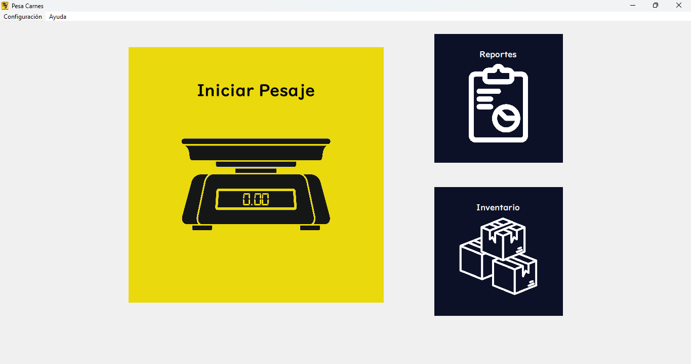
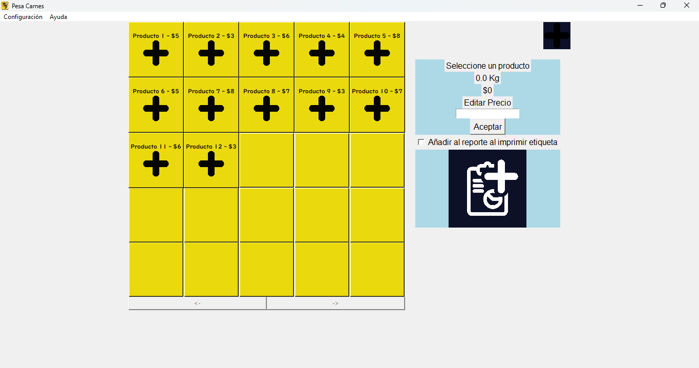

Este es un proyecto realizado durante mi servicio social en el CBTA 90, se trata una interfaz gráfica para mostrar el peso medido por una bascula Torrey, este proyecto se realizó con Python, la librería Tkinter usando comunicació serial para conectar la báscula al programa y mostrar el peso en la interfaz gráfica. A si mismo se implementó función de inventario para registrar los pesos medidos con fecha y hora integrando en excel realizar los reportes.